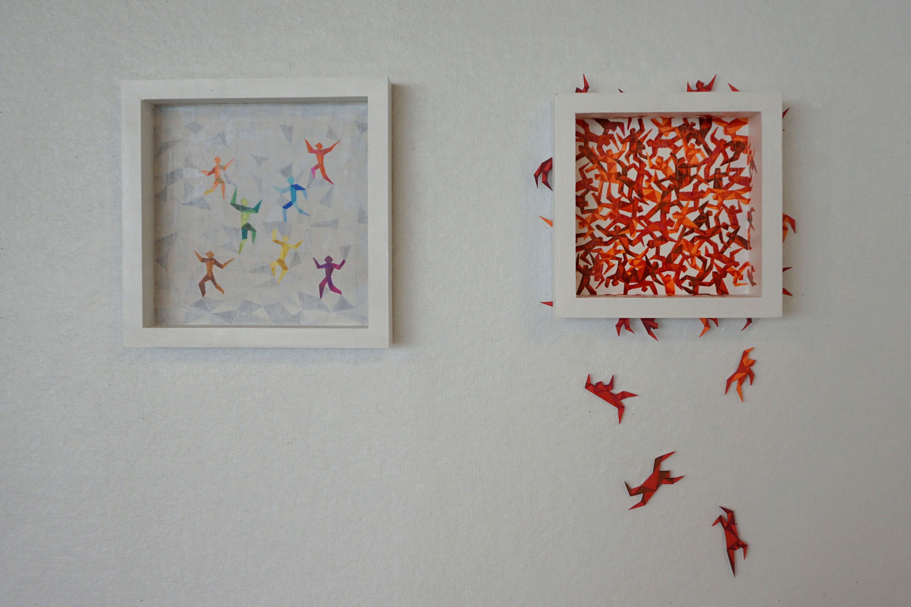

Where We Choose to Go
2019
I wanted to address the theme of overpopulation. People tend to cluster in specific areas and conform to popular trends, often neglecting individuality. This conformity is similar to overpopulation, where everyone follows the same path without seeking alternative directions. The first iteration of my artwork involved a pen drawing featuring simplified human figures. I opted for simplicity to ensure that the audience could easily understand the idea behind the work. The piece aimed to depict the issues of overpopulation, emphasizing how contemporary individuals gravitate towards collective behavior. For the second iteration of my artwork, I chose a wooden canvas and positioned figures that protrude from the canvas, creating three-dimensionality to the artwork. I also introduced color to the work to symbolize the lack of individuality, with figures in less crowded areas exhibiting various colors, while those in densely populated regions are painted red to reflect the irritation and frustration that can arise in such environments.
Pen on Paper, 22”x28.5”

Marker on Canvas and Illustration Board, 10"x 10", 10"x 18"
